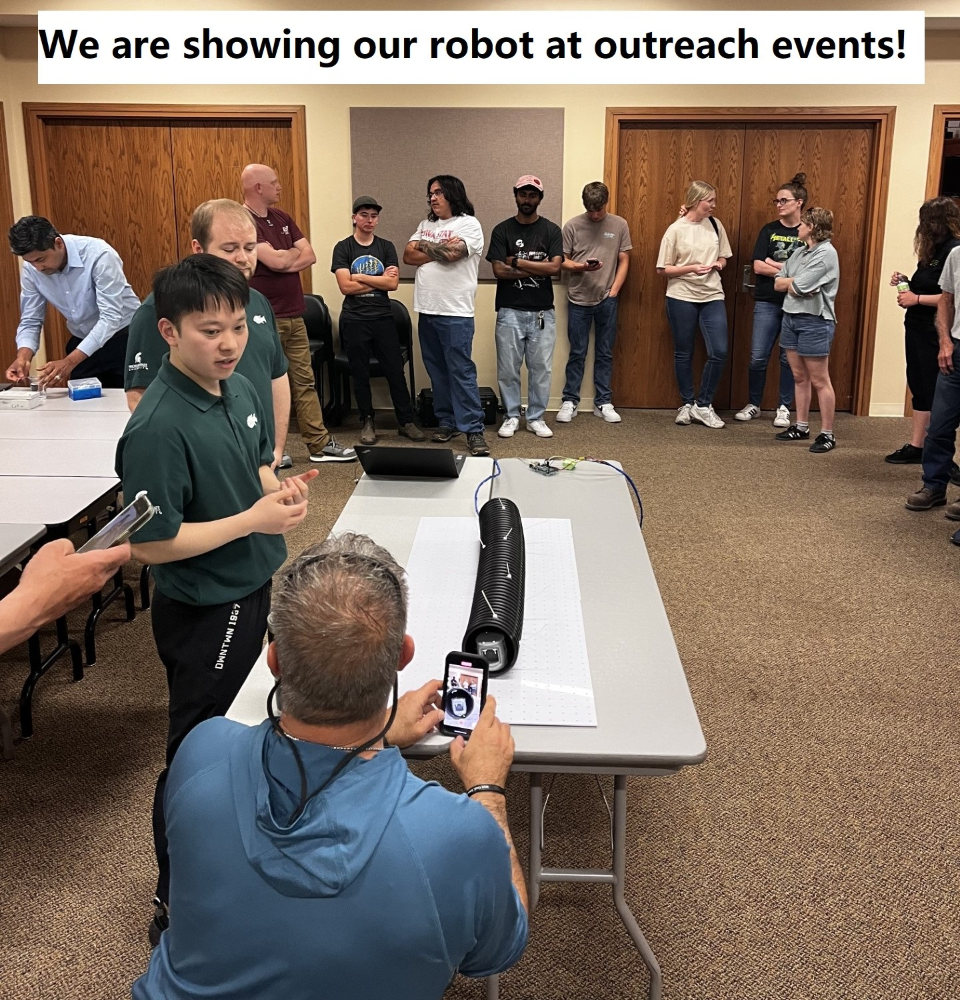
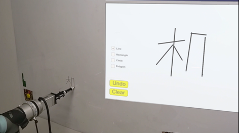
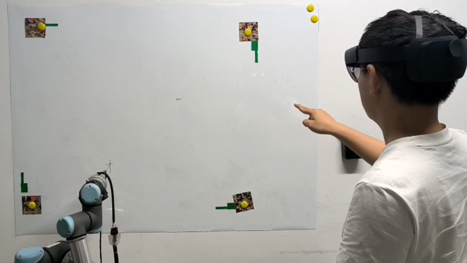

Xinyu Zhou
My Chinese name:周鑫宇（周: Zhou，鑫宇: Xinyu）
Michigan State University
Master's/Doctoral program student
Electrical and Computer Engineering (GPA:4.0/4.0)
Master's/Doctoral program student
Electrical and Computer Engineering (GPA:4.0/4.0)
East Lansing, USA
Aug. 2023 – present
Aug. 2023 – present
I am a first-year Master/Ph.D. track student at Department of Electrical and Computer Engineering, Michigan State University(MSU). Before that, I botained my Bachelor's degree(2019-2023) in Mechanical/Robotics Engineering at Peking University, China. My research interest lies in design, modeling and control of cool robots to explore potential applications of robotics.
Research Experiences
♦ Graduate Research Assistant, Department of Electrical and Computer Engineering, Michigan State University
Aug. 2023 - present
♦ Undergraduate Research Assistant, Department of Mechanical Engineering, UC Berkeley
Jul. 2022 - Oct. 2022
♦ Undergraduate Research Assistant, Department of Advanced Manufacturing and Robotics, Peking University
Sep. 2021 - Jun. 2023
Research Projects
Design and characterization of a mm-scale pneumatic manipulator for minimally invasive surgery.
Feb. 2024 – present
Developments in soft robotics offers promissing future for safer and more compliant interaction in invasive surgery. This project aims to develop a mm-scale pneumatic manipulator for minimally invasive surgery.
Results: We designed a pneumatic manipulator whose cross-section diameter is under 5 mm. Ongoing work includes characterization and optimization of the prototype.

Design and characterization of a novel bristle-machanism based worm-like robot for corrugated drainage pipes.
Aug. 2023 – present
Drainage pipes, which feature corrugation and flexibility, has been greatly used in agricultural systems. Meanwhile, this brings significant challenges in inspection and maintenance of the drainage pipe system. This project aims to build compliant robots which is able to run in corrugated and flexible drainage pipes, facilitating the intelligence of farm system.
Results: We designed a bio-inspired earthworm-like robot. By delicately designing two key complicant parts, the soft bellow body and anisotropic interacting fin of the robot, the robot shows good adaptibility in corrugated and flexible agricultural drainage pipes. A journal paper is in submitting stage.


Swarm robots with independent crawling and rolling motions.
Jul. 2022 – Sep. 2022
Swarm robots have shown special potentials in medical applications with their ability to interact with each other and the environment. We designed a novel mm-scale untethered magnetic robots, which have swarm operations and independent crawling.
and rolling motions.
Results: We designed a soft and untethered magnetic mm-scale robot controlled by single-axis magnetic field. The robot has following advantages: 1) working prototypes in the mm-scale with a moving speed of ~50 body size/s under the crawling mode operation; (2) an ultra-high moving speed of ~277 body size/s under the rolling mode operation; and 3) demonstrations of several complex swarming behaviors including chain-shape formation, crawling, and separation. A paper is presented at IEEE Transducers conference 2023: Wei Yue†, Xinyu Zhou†, Fanping Sui†, Mingzheng Duan, and Liwei Lin, "Untethered Swarm Robots with Independent Crawling and Rolling Motions" (†: the authors contributed equally.)
Design and characterization of two-DOF joint driven by artificial muscles.
Nov. 2022 – present
Two-DOF joints, such as shoulder joints and hip joints, are important parts of animals’ limbs. However, when building bio-robots, the 2-DOF ball joints are usually replaced by two single-axis joints driven by motors, which leads to more complicated
and weightier robots. Twisted and coiled polymer actuator(TCA) is a kind of highly regarded soft linear artificial muscle. Our project aims to develop 2-DOF joints driven by four or more SCP muscles.
Results: We fabricated and characterized strong TCA made of spandex and SMA, which can be powered by joule heating. A 2-DOF robotic joint driven by SCP is investigated, where we derived dynamic model of the system and controlled the system. Lots of simulation and experimented were done. A journal paper is under review of Robotics and Automation Letters.
Design, modeling and control of Robotic gliding blimp
Sep. 2021 – Sep. 2022
This project develops a novel and highly maneuverable aerial robotic blimp with gliding wings, which combines desirable features of blimps (high flight duration) and fixed wings (high lift-drag ratio). My responsibilities included modeling
the Robotic gliding blimp, simulating the non-linear system and building the prototype.
Results: We designed and modeled the robotic gliding blimp. In addition, we proposed and implemented a feedback linearization controller to realize flight trajectory tracking. A paper has been submitted to American Conference 2023: Hao Cheng, Xinyu Zhou, Feitian Zhang*, Modeling and Control of a Robotic Gliding Blimp
Based on Feedback Linearization.
Excellent Class Projects
Topology optimization design of double deck bridge structure. Oct. 2022 – Dec. 2022
Class project, carried out in course "Engineering Design Optimization"(Directed by Dr. Ke Liu) in 2022 Fall semester.
This project was aiming to design double deck bridge structure with maximum stiffness, utilizing topology optimization method, under the constraints of certain volume fraction and boundary conditions.
Teaching UR5 arm to paint with Hololens 2 headset. Nov. 2022 – Jan. 2023
Class project, carried out in course "Robotics Experiments (III)"(directed by Dr. Qining Wang) in 2022 Spring semester.
This project was aiming to control the UR5 arm to paint what people painted virtually with Hololens 2 headset, which is of mixed reality technology. We developed a virtual painting program in Hololens 2, conducted the communication mechanism
between Hololens 2 and PC, and controlled the UR5 arm with socker programing in Python.


Design of a new-style rigid-body workpiece gripper. Oct. 2021 – Dec. 2021
Class project, carried out in course "Robotics Experiments (I)"(directed by Dr. Qining Wang) in 2021 Spring semester.
This project was aiming to design and fabricate a well-designed mechanical gripper for workpieces of a specific shape. I put forward a well-received design based on screw and four-bar linkage. In addition, our team modeled the gripper in Solidworks, assembled
3D-printed parts and controlled a delta robot equipped with our gripper, cooperatively. This work was among excellent student works in that course.
Awards & Scholarship
- Engineering Distinguished Scholar, Michigan State University, 2023. “Awarded only to the most outstanding PhD applicants from across the College of Engineering”.
- National Encouragement Scholarship, Peking University, 2021.
- The Second Prize of Peking University Scholarship, Peking University, 2021, “for top 10% student”.
- Award for Contribution in Student Organization of Peking University, Peking University, 2021.
- The Second Prize of the 13th National Zhou Peiyuan College Student Mechanics Competition, China, 2021. “Awarded to top 0.5% of competitors nationwide”.
Skills
Programming
C, Python, Matlab, ROS, Embedded Systems Programming.
Simulation
Abaqus, COMSOL, Matlab & Simulink.
Mechanics
SolidWorks, FreeCAD, Blender; Mechanic system building(especially for robots).
Electronics
Altinum Designer, Keil μVision, Electronic system building(especially for robots).
Manufacturing
Silicone casting, FDM 3D printer, SLA 3D printer, NanoScribe X bio printer, Laser cutting.
Leadship Experiences
Vice-Chairman of the Student Union, College of Engineering at Peking University Jun. 2021 – May 2022
Vice-Director of Administration Department of Peking University Bicycle Association Feb. 2021 – Jun. 2021
Interests
Cycling: Cook good Chinese food, work out and ride XC bikes. Particularly, I enjoy maintaining my bike by myself.